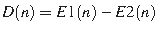
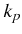
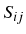

Desde un punto de vista químico podríamos definir el proceso de plegamiento (P) como una reacción, opuesta a la
desnaturalización (D), en estos términos (donde  es la constante de equilibrio):
es la constante de equilibrio):
|  | (2.1) |
Independientemente de que no sepamos todavía plegar
proteínas con precisión, sí que podemos
en ciertos casos estimar cuanto tardarán en plegarse a partir de su secuencia. Plaxco et al. (1998)
demostraron que la velocidad de plegamiento () de dominios está estrechamente correlacionada con
el orden de contactos (CO), es decir, la media de separación en secuencia entre residuos del dominio
ya plegado que están en estrecho contacto. En la siguiente ecuación N son los contactos totales,
 es la separación en secuencia entre los residuos  y
y  es lo longitud de la secuencia.
Se da un contacto cuando dos átomos pesados (no H) de dos residuos se encuentran a menos de 6Å:
es lo longitud de la secuencia.
Se da un contacto cuando dos átomos pesados (no H) de dos residuos se encuentran a menos de 6Å:
 |
(2.2) |
Por otro lado, Gong et al. (2003) encontraron otra fuerte correlación entre el contenido
en estructura secundaria de una secuencia de aminoácidos, su longitud, y su velocidad de plegamiento.
La función que definen tiene esta forma (donde H, T y B son fracciones de residuos en esos estados de
estructura secundaria (ver tabla 1.2) y  es la longitud de la secuencia):
es la longitud de la secuencia):
 |
(2.3) |
donde se mide en  . Estas correlaciones sugieren que el factor limitante del proceso
de plegamiento es la formación de elementos de estructura secundaria.
. Estas correlaciones sugieren que el factor limitante del proceso
de plegamiento es la formación de elementos de estructura secundaria.
El problema de estos métodos es que exigen conocer la estructura de la proteína en cuestión, aunque se podrían aplicar usando predicciones de estructura secundaria y de orden de contactos.

|